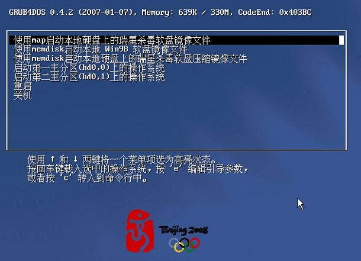
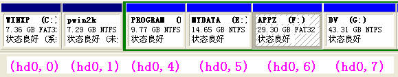
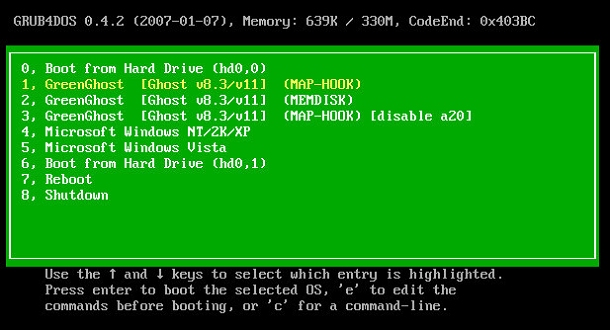

1 grub4dos初级教程－入门篇
1.4 如何使用grub4dos
对于多数没有或很少接触过linux的windows用户来说，刚开始使用grub时离不开菜单。也就是说，使用grub前，我们要准备menu.lst文件。
下面是一个menu.lst的例子。(以#开始的行，表示注释，不执行)
# 默认延迟时间(秒)
timeout 30
# 第一项为默认值
default 0
# 设置图形背景文件
splashimage (hd0,0)/boot/grub/xp2008.gz
# 设置中文支持的字体文件
fontfile (hd0,0)/boot/grub/fonts
title 使用map启动本地硬盘上的瑞星杀毒软盘镜像文件
map (hd0,0)/boot/grub/rav.img (fd0)
map --hook
chainloader (fd0)+1
rootnoverify (fd0)
title 使用memdisk启动本地 Win98 软盘镜像文件
kernel (hd0,0)/boot/grub/memdisk.gz
initrd (hd0,0)/boot/grub/win98.img
title 使用memdisk启动本地硬盘上的瑞星杀毒软盘压缩镜像文件
root (hd0,0)
kernel /boot/grub/memdisk.gz c=80 h=12 s=36 floppy
initrd /boot/rav.zip
title 启动第一主分区(hd0,0)上的操作系统
rootnoverify (hd0,0)
makeactive
chainloader +1
title 启动第二主分区(hd0,1)上的操作系统
rootnoverify (hd0,1)
makeactive
chainloader +1
title 重启
reboot
title 关机
halt
此菜单文件的运行效果如下图。【图2】

参考这个例子，我们就可以根据自己需要对菜单进行修改。
比如从网上下载了效率源的镜像文件，文件名为XLY.IMG。我们只需把
title 使用memdisk启动本地 Win98 软盘镜像文件
kernel (hd0,0)/boot/grub/memdisk.gz
initrd (hd0,0)/boot/grub/win98.img
改成
title 硬盘检测修复工具 效率源 (memdisk)
kernel (hd0,0)/boot/grub/memdisk.gz
initrd (hd0,0)/boot/grub/xly.img
或者改成
title 硬盘检测修复工具 效率源 (map)
map (hd0,0)/boot/grub/xly.img (fd0)
map --hook
chainloader (fd0)+1
rootnoverify (fd0)
同时把xly.img文件保存到第一主分区（一般是C:）的boot\grub目录下。
当然也可以保存到其它路径。
比如xly.img文件保存到C:\boot下，则menu.lst文件相应改为:
map (hd0,0)/boot/xly.img (fd0)
又如xly.img文件保存到D:\test下，则menu.lst文件相应改为:
map (hd0,4)/test/xly.img (fd0)
(参看下面的注意d)
从上面的例子可以看出，启动软盘镜象，有两种方式，即用memdisk或用map。
用memdisk时，img文件可压缩；在img文件大小为非1.44MB或2.88MB标准镜像时，需要指定CHS参数。img文件的CHS参数可用winimage获得。
即例子中的：
title 使用memdisk启动本地硬盘上的瑞星杀毒软盘压缩镜像文件
root (hd0,0)
kernel /boot/grub/memdisk.gz c=80 h=12 s=36 floppy
initrd /boot/rav.zip
另外，菜单文件中的文件路径可用相对路径（如：
/boot/rav.zip）或绝对路径（如：
(hd0,0)/boot/grub/xly.img）表示。
map方式对软盘映像大小没有限制，但要求必须连续存放。改进的map --mem则无此限制。
比如：
map --mem /boot/xxx.ima (fd0)
map --hook
chainloader (fd0)+1
rootnoverify (fd0)
注意：
a, 菜单文件中所用的memdisk.gz文件，不包括在grub4dos的发行包里，需自行准备。可从gnu grub软件包或从其它基于grub的工具（如一键ghost，本人的gghost）中获得。
b, 菜单中所用的其它文件如xp2008.gz（背景文件）、fonts（中文字体文件）及各种镜像文件等，均需拷贝到文件中指定路径。
fontfile命令不可单独使用，需与splashimage一起使用。
c, 菜单文件中的命令全部使用小写。
d,
初学者使用绝对路径时要注意GRUB对设备的命名方法。系统的第一个硬盘驱动器表示成(hd0)，其上的第一个分区表示为(hd0,0)，也就是说对于硬盘,采用(hdx,y)的形式来表示，x、y都是从0开始计数的，x表示硬盘号，y表示分区号。
由于主分区只能有四个，所以第一硬盘的四个主分区分别用(hd0,0)~(hd0,3)来表示；逻辑分区则从(hd0,4)开始算，即第一逻辑分区用(hd0,4)，第二逻辑分区用(hd0,5)来表示，依次类推。
一般机子的硬盘都是一个主分区，其余是逻辑分区。因此C盘用(hd0,0)，D盘用(hd0,4)来表示。 光盘用(cd)表示，第一软驱用(fd0)表示。
如我的硬盘有两个主分区，其余为逻辑分区。用(hdx,y)的方法表示如下图：

下面是我现在使用的菜单效果图及menu.lst文件，供参考。【图3】

color white/green yellow/green
default 1
timeout 3
#fontfile /boot/grub/fonts
#splashimage /boot/grub/bg.xpm.gz
#password --md5 $1$8$D0mfzTIQXv2Ma2b5bWH0b.
title 0, Boot from Hard Drive (hd0,0)
root (hd0,0)
chainloader +1
title 1, GreenGhost [Ghost v8.3/v11] (MAP-HOOK)
map --mem /boot/grub/gghost.img (fd0)
map --hook
chainloader (fd0)+1
rootnoverify (fd0)
title 2, GreenGhost [Ghost v8.3/v11] (MEMDISK)
kernel /boot/grub/memdisk.gz c=200 h=2 s=36 floppy
initrd /boot/grub/gghost.img
title 3, GreenGhost [Ghost v8.3/v11] (MAP-HOOK) [disable a20]
map --mem /boot/grub/gghost.img (fd0)
map --hook
chainloader --disable-a20 (fd0)+1
rootnoverify (fd0)
title 4, Microsoft Windows NT/2K/XP
find --set-root /ntldr
chainloader /ntldr
title 5, Microsoft Windows Vista
find --set-root /bootmgr
chainloader /bootmgr
title 6, Boot from Hard Drive (hd0,1)
root (hd0,1)
chainloader +1
title 7, Reboot
reboot
title 8, Shutdown
halt